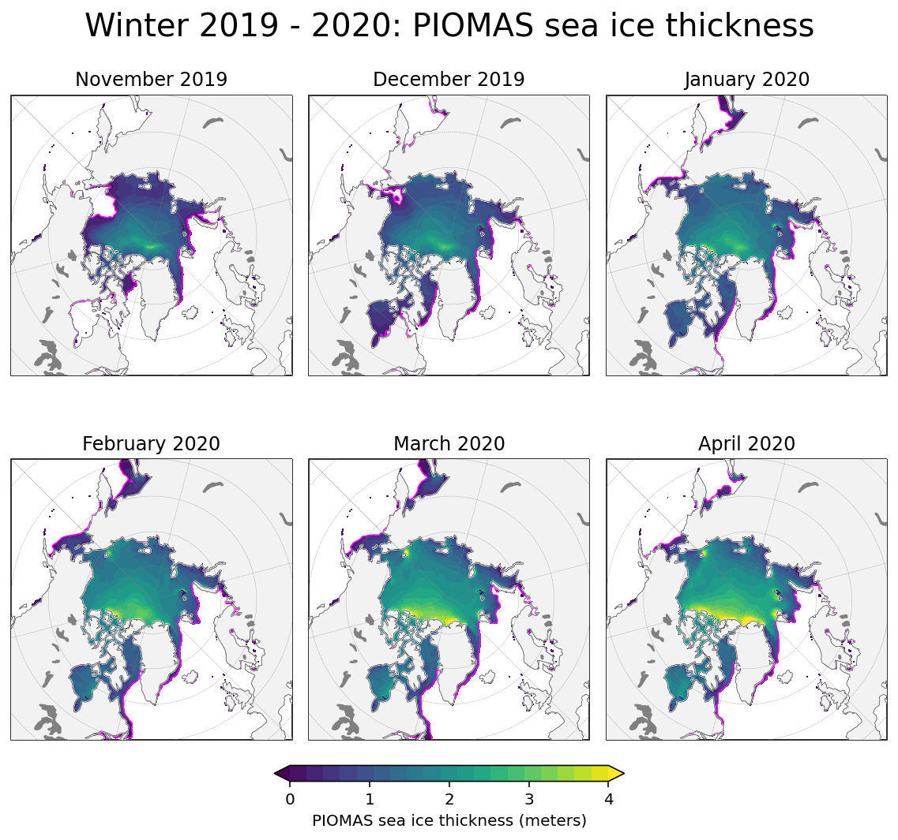
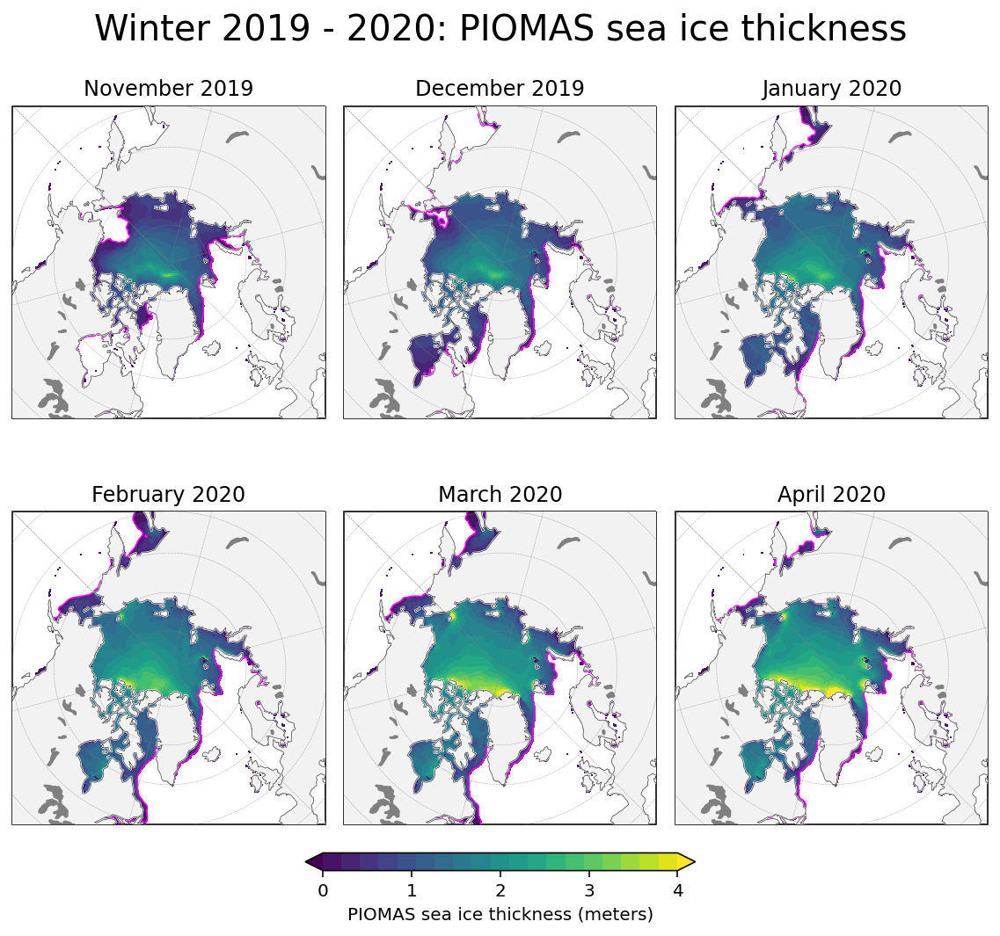
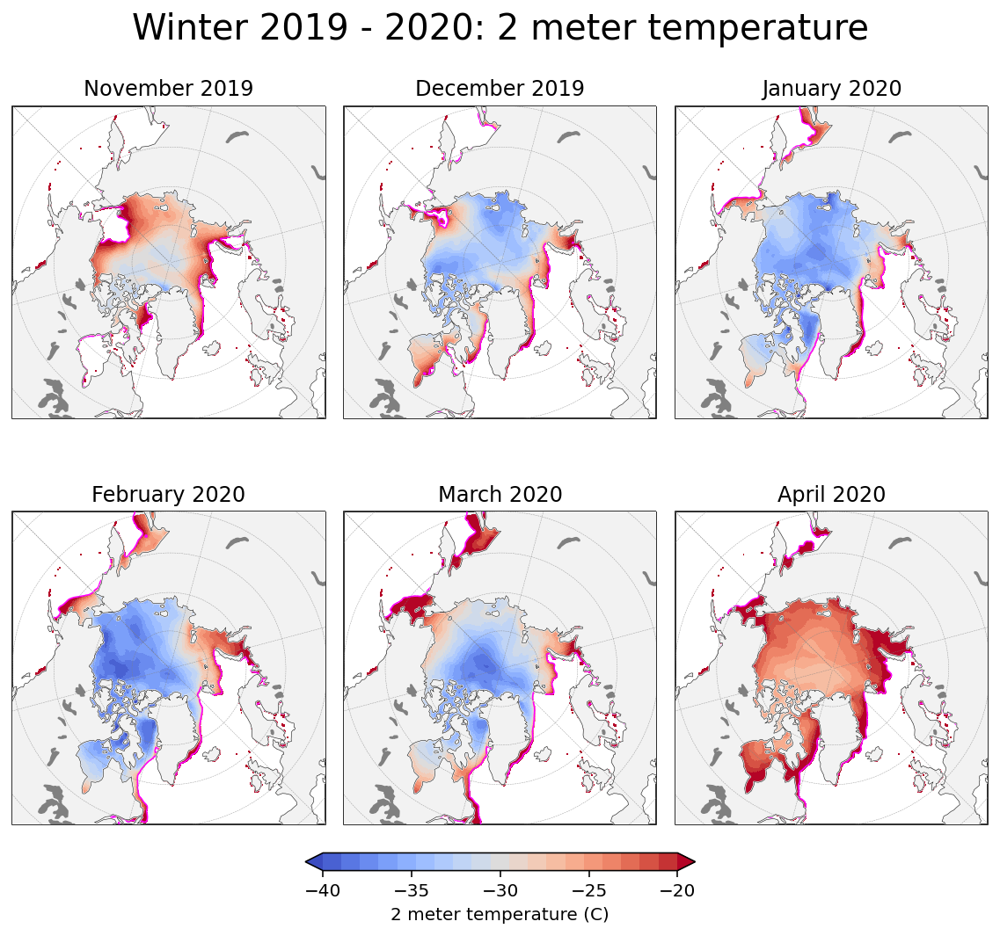
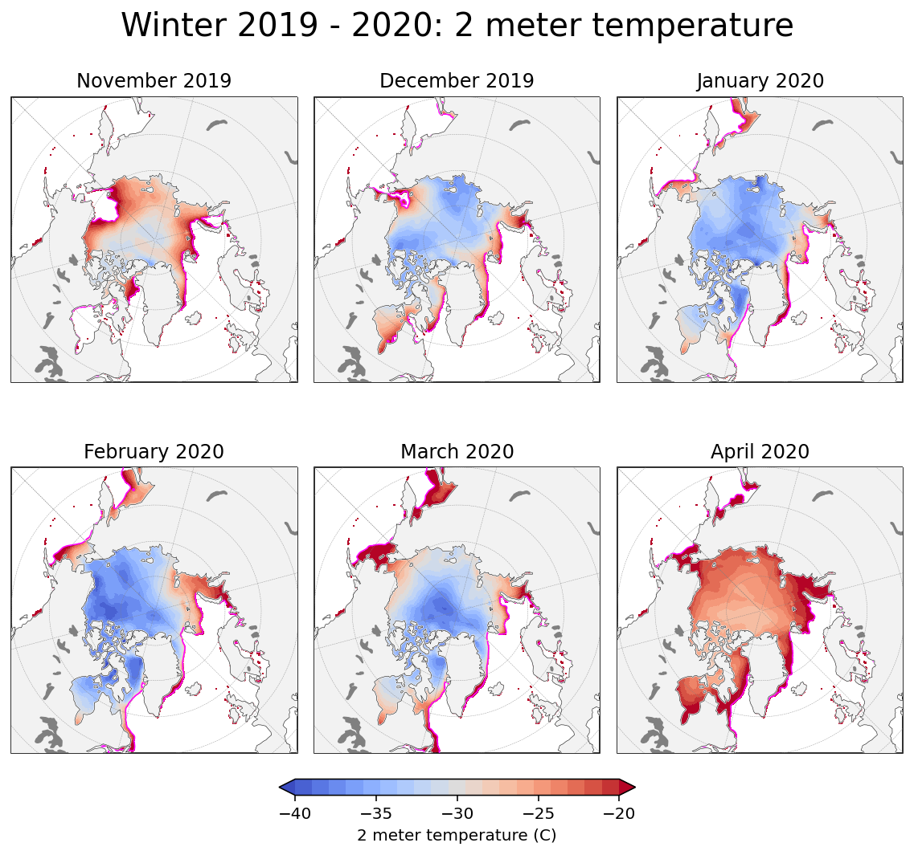

Mapping¶
This notebook uses the cartopy package to generate maps of data variables of interest in the Arctic.
Input:
NETCDF4 file from the jupyter book’s google bucket
Output:
Maps of sea ice thickness and sea ice type in the Arctic
Tip
Try running this notebook in Google Colab! Toggle over the rocketship icon at the top of the page and click Colab to open a new window and run the notebook.
To run a single cell, type Shift+Enter. To run the whole notebook, under Runtime click Run all. Note that you will have to run the notebook from the very beginning and load all the Google Colab dependencies for the code to work.
Import notebook dependencies¶
import os
import matplotlib.pyplot as plt
import numpy as np
import xarray as xr
import pandas as pd
import numpy.ma as ma
import scipy
import cartopy.crs as ccrs
import cartopy.feature as cfeature
import pyproj
from datetime import date
#axes needed for plotting
from matplotlib.axes import Axes
from cartopy.mpl.geoaxes import GeoAxes
GeoAxes._pcolormesh_patched = Axes.pcolormesh
# Ignore warnings in the notebook to improve display
# You might want to remove this when debugging/writing new code
import warnings
warnings.filterwarnings('ignore')
#increase resolution for notebook outputs
%matplotlib inline
%config InlineBackend.figure_format = 'retina'
#import utils function
if 'utils.py' not in os.listdir(os.getcwd()):
!gsutil cp gs://icesat2-book-data/utils.py ./
import utils
Load data into notebook¶
Copy file from the book’s google bucket and load into an xarray dataset.
!gsutil cp gs://icesat2-book-data/icesat2-book-winter-data.nc ./
dataset = xr.open_dataset('icesat2-book-winter-data.nc')
Restrict dataset to region of interest¶
#myKeys = [10,11,12,13,15] #Inner Arctic
#dataset = utils.restrictRegionally(dataset, regionKeyList = myKeys)
Plot one month of data¶
Note
Cartopy has a bug and cannot produce a contour plot on a rotated grid. Here we use a workaround from stackexchange: https://stackoverflow.com/questions/55062406/cartopy-fails-to-correctly-contour-data-on-rotated-grid
Define function
def plotOneMonth(dataset, dataVar, month, minval, maxval, cbarTicks = None, cmap = 'viridis'):
"""Plots map of the arctic on North Pole Stereo projection with one month of data overlayed, along with the sea ice edge for each month.
Args:
dataset (xr Dataset): dataset from google bucket
dataVar (str): variable of interest
month (str): month and year of interest, i.e. 'Dec 2019' (does not need to be in any particular format)
minval, maxval (int): minimum and maximum values for the data variable
cbarTicks (list or np array of length 2): ticks to use on colorbar (default to [minval + 1, maxval +1])
cmap (str, optional): color map (default to viridis)
Returns:
Figure displayed in notebook
"""
#define projection and transform
proj = ccrs.NorthPolarStereo(central_longitude = -45)
transform = ccrs.PlateCarree()
#initialize the figure and axes
plt.figure(figsize=(6, 6))
ax = plt.axes(projection = proj)
#define arguments if not inputted
cbarTicks = np.arange(minval, maxval + 1, 1) if cbarTicks is None else cbarTicks
#plot sea ice concentraion
SICarray = dataset['seaice_conc_monthly_cdr'].sel(time = month).where(dataset['region_mask']!=21) #dont plot contour along coastlines
#stackexchange workaround for plotting on a rotated grid
lonGreater = ma.masked_greater(SICarray.longitude.values, -0.01)
lonLesser = ma.masked_less(SICarray.longitude.values, 0)
latGreater = ma.MaskedArray(SICarray.latitude.values, mask = lonGreater.mask)
latLesser = ma.MaskedArray(SICarray.latitude.values, mask = lonLesser.mask)
dataGreater = ma.MaskedArray(SICarray.values[0], mask = lonGreater.mask)
dataLesser = ma.MaskedArray(SICarray.values[0], mask = lonLesser.mask)
#plot contour using each part of the 2 masked data sets
im2a = ax.contour(lonGreater, latGreater, dataGreater, levels = [0.5], transform = transform, colors = 'magenta', linewidths = 0.9, zorder=5, alpha=1)
im2b = ax.contour(lonLesser, latLesser, dataLesser, levels = [0.5], transform = transform, colors = 'magenta', linewidths = 0.9, zorder=5, alpha=1)
#im = ax.contour(SICarray.longitude.values, SICarray.latitude.values, SICarray.values[0], levels = [0.15], transform = transform, colors = 'magenta', linewidths = 0.8, zorder=15, alpha=1)
#plot the data
dataset[dataVar].where(dataset['seaice_conc_monthly_cdr'] > 0.5).sel(time = month).plot(x = 'longitude', y = 'latitude', vmin = minval, vmax = maxval, extend = 'both',
ax = ax, add_colorbar = True, transform = transform, zorder = 2, cmap = cmap,
cbar_kwargs = {'label': dataset[dataVar].attrs['long_name'] + ' (' + dataset[dataVar].attrs['units'] + ')', 'orientation': 'horizontal', 'shrink': 0.75, 'pad': 0.025})
#add features to the map
ax.coastlines(linewidth=0.15, color = 'black', zorder = 10) #add coastlines
ax.add_feature(cfeature.LAND, color ='0.95', zorder = 5) #add land
ax.add_feature(cfeature.LAKES, color = 'grey', zorder = 5) #add lakes
ax.gridlines(draw_labels = False, linewidth = 0.25, color = 'gray', alpha = 0.7, linestyle = '--', zorder = 6) #add gridlines
ax.set_extent([-179, 179, 55, 90], crs = transform) #zoom in so map only displays the Arctic
ax.set_title(month + ": " + dataset[dataVar].attrs['long_name'], fontweight = 'medium')
#display figure in notebook
plt.show()
Call function
plotOneMonth(dataset, dataVar = 'ice_thickness_filled', month = 'Feb 2019', minval = 0, maxval = 4)

Define plotting function¶
This function can also be accessed from the utils.py file, stored in the google bucket for this book.
This function is modified from the plotOneMonth function above
Winter is defined as the months Nov, Dec, Jan, Feb, Mar, Apr
def plotWinterMaps(dataset, dataVar, winter, minval, maxval, cbarTicks = None, title = "", cmap = 'viridis'):
"""Plot maps of the arctic on North Pole Stereo projection with several months of data overlayed, along with the sea ice edge for each month.
Args:
dataset (xr Dataset): dataset from google bucket
dataVar (str): variable of interest
winter (list): list of pandas Timestamp objects generated by getWinterDateRange(startYear, endYear)
minval, maxval (int): minimum and maximum values for the data variable
cbarTicks (list or np array of length 2): ticks to use on colorbar (default to [minval + 1, maxval +1])
title (str, optional): title of subplots (default to empty string)
cmap (str, optional): color map (default to viridis)
Returns:
Figure displayed in notebook
"""
#format time for plotting
timeFormatted = list(pd.to_datetime(winter).strftime('%B %Y'))
#define projection and transform
proj = ccrs.NorthPolarStereo(central_longitude = -45)
transform = ccrs.PlateCarree()
#define arguments if not inputted
cbarTicks = np.arange(minval, maxval + 1, 1) if cbarTicks is None else cbarTicks
#plot the data
im = dataset[dataVar].where(dataset['seaice_conc_monthly_cdr'] > 0.5).sel(time = winter).plot.pcolormesh(x = 'longitude', y = 'latitude', vmin = minval, vmax = maxval, cmap = cmap,
extend='both', levels=20, transform = transform, col='time', add_colorbar = True, zorder = 2, figsize = (8,8), col_wrap = 3,
cbar_kwargs = {'ticks': cbarTicks, 'label': dataset[dataVar].attrs['long_name'] + ' (' + dataset[dataVar].attrs['units'] + ')', 'orientation': 'horizontal', 'shrink': 0.4, 'pad': 0.03},
subplot_kws = {'projection': proj})
#add a title
plt.suptitle(title + ': ' + dataset[dataVar].attrs['long_name'], fontsize = 20, y = 0.99, fontweight = 'medium')
i = 0 #indexer to go through timeFormatted and winter arrays and assign the correct data to each month
for ax in im.axes.flat:
ax.coastlines(linewidth=0.25, color = 'black', zorder = 10) #add coastlines
ax.add_feature(cfeature.LAND, color ='0.95', zorder = 5) #add land
ax.add_feature(cfeature.LAKES, color = 'grey', zorder = 5) #add lakes
ax.gridlines(draw_labels = False, linewidth = 0.25, color = 'gray', alpha = 0.75, linestyle='--', zorder = 6) #add gridlines
ax.set_extent([-179, 179, 50, 90], crs = transform) #zoom in so map only displays the Arctic
#plot sea ice concentration
SICarray = dataset['seaice_conc_monthly_cdr'].sel(time = winter[i]).where(dataset['region_mask']!=21) #dont plot contour along coastlines
lonGreater = ma.masked_greater(SICarray.longitude.values, -0.01)
lonLesser = ma.masked_less(SICarray.longitude.values, 0)
latGreater = ma.MaskedArray(SICarray.latitude.values, mask = lonGreater.mask)
latLesser = ma.MaskedArray(SICarray.latitude.values, mask = lonLesser.mask)
dataGreater = ma.MaskedArray(SICarray.values, mask = lonGreater.mask)
dataLesser = ma.MaskedArray(SICarray.values, mask = lonLesser.mask)
im2a = ax.contour(lonGreater, latGreater, dataGreater, levels = [0.5], transform = transform, colors = 'magenta', linewidths = 0.8, zorder=5, alpha=1)
im2b = ax.contour(lonLesser, latLesser, dataLesser, levels = [0.5], transform = transform, colors = 'magenta', linewidths = 0.8, zorder=5, alpha=1)
#set title of each plot to formatted date
ax.set_title(timeFormatted[i])
#update indexer
i += 1
#display figure in notebook
plt.show()
Plot maps for different data variables¶
Here, we will call the winter plotting function on some of the variables in the dataset using different arguments for minimum & maximum values and colormap to allow for visualization of the data.
Define winter season¶
These variables will be used for plotting
#Winter 2018-2019 range and descriptive string
winter_18_19 = utils.getWinterDateRange(2018, 2019)
winter_18_19_str = 'Winter ' + str(2018) + ' - ' + str(2019)
#Winter 2019-2020 range and descriptive string
winter_19_20 = utils.getWinterDateRange(2019, 2020)
winter_19_20_str = 'Winter ' + str(2019) + ' - ' + str(2020)
ICESat-2 sea ice thickness¶
#winter 2018-2019
plotWinterMaps(dataset, dataVar = 'ice_thickness_filled', winter = winter_18_19,
minval = 0, maxval = 4, title = winter_18_19_str)
#winter 2019-2020
plotWinterMaps(dataset, dataVar = 'ice_thickness_filled', winter = winter_19_20,
minval = 0, maxval = 4, title = winter_19_20_str)


PIOMAS sea ice thickness¶
#winter 2018-2019
plotWinterMaps(dataset, dataVar = 'PIOMAS_ice_thickness', winter = winter_18_19,
minval = 0, maxval = 4, title = winter_18_19_str)
#winter 2019-2020
plotWinterMaps(dataset, dataVar = 'PIOMAS_ice_thickness', winter = winter_19_20,
minval = 0, maxval = 4, title = winter_19_20_str)
 

ICESat-2 sea ice thickness uncertainty¶
This variable describes systematic uncertainty in the sea ice thickness measurement.
#winter 2018-2019
plotWinterMaps(dataset, dataVar = 'ice_thickness_unc_filled', winter = winter_18_19,
minval = 0, maxval = 1, cmap = 'plasma', title = winter_18_19_str)
#winter 2019-2020
plotWinterMaps(dataset, dataVar = 'ice_thickness_unc_filled', winter = winter_19_20,
minval = 0, maxval = 1, cmap = 'plasma', title = winter_19_20_str)
OSI-SAF ice type¶
Ice type is either multi-year ice (set to 1) or first-year ice (set to 0).
#winter 2018-2019
plotWinterMaps(dataset, dataVar = 'ice_type_filled', winter = winter_18_19,
minval = 0, maxval = 1, cmap = 'YlOrRd', title = winter_18_19_str)
#winter 2019-2020
plotWinterMaps(dataset, dataVar = 'ice_type_filled', winter = winter_19_20,
minval = 0, maxval = 1, cmap = 'YlOrRd', title = winter_19_20_str)


ERA5 2-meter temperature¶
#winter 2018-2019
plotWinterMaps(dataset, dataVar = 't2m', winter = winter_18_19, cbarTicks = np.arange(-40,-20 + 5, 5),
minval = -40, maxval = -20, cmap = 'coolwarm', title = winter_18_19_str)
#winter 2019-2020
plotWinterMaps(dataset, dataVar = 't2m', winter = winter_19_20, cbarTicks = np.arange(-40,-20 + 5, 5),
minval = -40, maxval = -20, cmap = 'coolwarm', title = winter_19_20_str)
 

ERA5 mean surface downward long-wave radiation flux¶
#winter 2018-2019
plotWinterMaps(dataset, dataVar = 'msdwlwrf', winter = winter_18_19, cbarTicks = np.arange(150,250 + 25, 25),
minval = 150, maxval = 250, cmap = 'PuRd', title = winter_18_19_str)
#winter 2019-2020
plotWinterMaps(dataset, dataVar = 'msdwlwrf', winter = winter_19_20, cbarTicks = np.arange(150,250 + 25, 25),
minval = 150, maxval = 250, cmap = 'PuRd', title = winter_19_20_str)